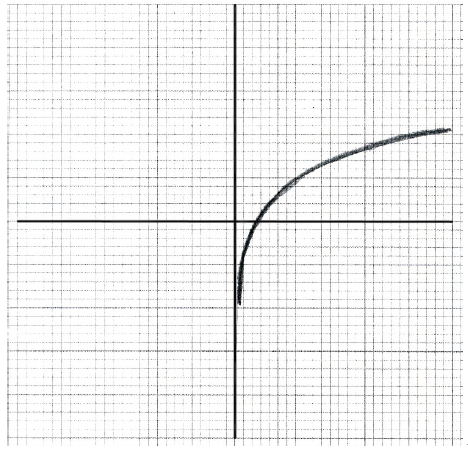

SL Paper 2
Consider the expansion of \({\left( {\frac{{{x^3}}}{2} + \frac{p}{x}} \right)^8}\). The constant term is \(5103\). Find the possible values of \(p\).
Markscheme
valid approach to find the required term (M1)
eg\(\;\;\;\)\(\left( {\begin{array}{*{20}{c}} 8 \\ r \end{array}} \right){\left( {\frac{{{x^3}}}{2}} \right)^{8 - r}}{\left( {\frac{p}{x}} \right)^r},{\text{ }}{\left( {\frac{{{x^3}}}{2}} \right)^8}{\left( {\frac{p}{x}} \right)^0} + \left( {\begin{array}{*{20}{c}} 8 \\ 1 \end{array}} \right){\left( {\frac{{{x^3}}}{2}} \right)^7}{\left( {\frac{p}{x}} \right)^1} + \ldots \), Pascal’s triangle to required value
identifying constant term (may be indicated in expansion) (A1)
eg\(\;\;\;\)\({7^{{\text{th}}}}{\text{ term, }}r = 6,{\text{ }}{\left( {\frac{1}{2}} \right)^2},{\text{ }}\left( {\begin{array}{*{20}{c}} 8 \\ 6 \end{array}} \right),{\text{ }}{\left( {\frac{{{x^3}}}{2}} \right)^2}{\left( {\frac{p}{x}} \right)^6}\)
correct calculation (may be seen in expansion) (A1)
eg\(\;\;\;\)\(\left( {\begin{array}{*{20}{c}} 8 \\ 6 \end{array}} \right){\left( {\frac{{{x^3}}}{2}} \right)^2}{\left( {\frac{p}{x}} \right)^6},{\text{ }}\frac{{8 \times 7}}{2} \times \frac{{{p^6}}}{{{2^2}}}\)
setting up equation with their constant term equal to \(5103\) M1
eg\(\;\;\;\)\(\left( {\begin{array}{*{20}{c}} 8 \\ 6 \end{array}} \right){\left( {\frac{{{x^3}}}{2}} \right)^2}{\left( {\frac{p}{x}} \right)^6} = 5103,{\text{ }}{p^6} = \frac{{5103}}{7}\)
\(p = \pm 3\) A1A1 N3
[6 marks]
Examiners report
Candidates tended to either do very well or very poorly in this question. Some had difficulty understanding what the constant term was, while others were unable to find the value of \(r\) that led to the constant term. Many algebraic errors were seen in the calculation of the term, mostly having to do with forgetting to square \(\frac{1}{2}\). Some missed the negative solution for p, despite the fact that the question asked for the “values” of \(p\).
Expand \(\sum\limits_{r = 4}^7 {{2^r}} \) as the sum of four terms.
(i) Find the value of \(\sum\limits_{r = 4}^{30} {{2^r}} \) .
(ii) Explain why \(\sum\limits_{r = 4}^\infty {{2^r}} \) cannot be evaluated.
Markscheme
\(\sum\limits_{r = 4}^7 {{2^r}} = {2^4} + {2^5} + {2^6} + {2^7}\) (accept \(16 + 32 + 64 + 128\) ) A1 N1
[1 mark]
(i) METHOD 1
recognizing a GP (M1)
\({u_1} = {2^4}\) , \(r = 2\) , \(n = 27\) (A1)
correct substitution into formula for sum (A1)
e.g. \({S_{27}} = \frac{{{2^4}({2^{27}} - 1)}}{{2 - 1}}\)
\({S_{27}} = 2147483632\) A1 N4
METHOD 2
recognizing \(\sum\limits_{r = 4}^{30} { = \sum\limits_{r = 1}^{30} { - \sum\limits_{r = 1}^3 {} } } \) (M1)
recognizing GP with \({u_1} = 2\) , \(r = 2\) , \(n = 30\) (A1)
correct substitution into formula for sum
\({S_{30}} = \frac{{2({2^{30}} - 1)}}{{2 - 1}}\) (A1)
\( = 214783646\)
\(\sum\limits_{r = 4}^{30} {{2^r}} = 2147483646 - (2 + 4 + 8)\)
\( = 2147483632\) A1 N4
(ii) valid reason (e.g. infinite GP, diverging series), and \(r \ge 1\) (accept \(r > 1\) ) R1R1 N2
[6 marks]
Examiners report
This question proved difficult for many candidates. A number of students seemed unfamiliar with sigma notation. Many were successful with part (a), although some listed terms or found an overall sum with no working.
The results for part (b) were much more varied. Many candidates did not realize that \(n\) was \(27\) and used \(30\) instead. Very few candidates gave a complete explanation why the infinite series could not be evaluated; candidates often claimed that the value could not be found because there were an infinite number of terms.
Expand \({(x - 2)^4}\) and simplify your result.
Find the term in \({x^3}\) in \((3x + 4){(x - 2)^4}\) .
Markscheme
evidence of expanding M1
e.g. \({(x - 2)^4} = {x^4} + 4{x^3}( - 2) + 6{x^2}{( - 2)^2} + 4x{( - 2)^3} + {( - 2)^4}\) A2 N2
\({(x - 2)^4} = {x^4} - 8{x^3} + 24{x^2} - 32x + 16\)
[3 marks]
finding coefficients, \(3 \times 24( = 72)\) , \(4 \times( - 8)( = - 32)\) (A1)(A1)
term is \(40{x^3}\) A1 N3
[3 marks]
Examiners report
Where candidates recognized the binomial nature of the expression, many completed the expansion successfully, although some omitted the negative signs.
Where candidates recognized the binomial nature of the expression, many completed the expansion successfully, although some omitted the negative signs. Few recognized that only the multiplications that achieve an index of 3 are required in part (b) and distributed over the entire expression. Others did not recognize that two terms in the expansion must be combined.
Let \(f(x) = {\log _3}\frac{x}{2} + {\log _3}16 - {\log _3}4\) , for \(x > 0\) .
Show that \(f(x) = {\log _3}2x\) .
Find the value of \(f(0.5)\) and of \(f(4.5)\) .
The function f can also be written in the form \(f(x) = \frac{{\ln ax}}{{\ln b}}\) .
(i) Write down the value of a and of b .
(ii) Hence on graph paper, sketch the graph of f , for \( - 5 \le x \le 5\) , \( - 5 \le y \le 5\) , using a scale of 1 cm to 1 unit on each axis.
(iii) Write down the equation of the asymptote.
Write down the value of \({f^{ - 1}}(0)\) .
The point A lies on the graph of f . At A, \(x = 4.5\) .
On your diagram, sketch the graph of \({f^{ - 1}}\) , noting clearly the image of point A.
Markscheme
combining 2 terms (A1)
e.g. \({\log _3}8x - {\log _3}4\) , \({\log _3}\frac{1}{2}x + {\log _3}4\)
expression which clearly leads to answer given A1
e.g. \({\log _3}\frac{{8x}}{4}\) , \({\log _3}\frac{{4x}}{2}\)
\(f(x) = {\log _3}2x\) AG N0
[2 marks]
attempt to substitute either value into f (M1)
e.g. \({\log _3}1\) , \({\log _3}9\)
\(f(0.5) = 0\) , \(f(4.5) = 2\) A1A1 N3
[3 marks]
(i) \(a = 2\) , \(b = 3\) A1A1 N1N1
(ii)
 A1A1A1 N3
Note: Award A1 for sketch approximately through \((0.5 \pm 0.1{\text{, }}0 \pm 0.1)\) , A1 for approximately correct shape, A1 for sketch asymptotic to the y-axis.
(iii) \(x = 0\) (must be an equation) A1 N1
[6 marks]
\({f^{ - 1}}(0) = 0.5\) A1 N1
[1 mark]
 A1A1A1A1 N4
A1A1A1A1 N4
Note: Award A1 for sketch approximately through \((0 \pm 0.1{\text{, }}0.5 \pm 0.1)\) , A1 for approximately correct shape of the graph reflected over \(y = x\) , A1 for sketch asymptotic to x-axis, A1 for point \((2 \pm 0.1{\text{, }}4.5 \pm 0.1)\) clearly marked and on curve.
[4 marks]
Examiners report
Few candidates had difficulty with part (a) although it was often communicated using some very sloppy applications of the rules of logarithm, writing \(\frac{{\log 16}}{{\log 4}}\) instead of \(\log \left( {\frac{{16}}{4}} \right)\) .
Part (b) was generally done well.
Part (c) (i) was generally done well; candidates seemed quite comfortable changing bases. There were some very good sketches in (c) (ii), but there were also some very poor ones with candidates only considering shape and not the location of the x-intercept or the asymptote. A surprising number of candidates did not use the scale required by the question and/or did not use graph paper to sketch the graph. In some cases, it was evident that students simply transposed their graphs from their GDC without any analytical consideration.
Part (d) was poorly done as candidates did not consider the command term, “write down” and often proceeded to find the inverse function before making the appropriate substitution.
Part (e) eluded a great many candidates as most preferred to attempt to find the inverse analytically rather than simply reflecting the graph of f in the line \(y = x\) . This graph also suffered from the same sort of problems as the graph in (c) (ii). Some students did not have their curve passing through \((2{\text{, }}4.5)\) nor did they clearly indicate its position as instructed. This point was often mislabelled on the graph of f. The efforts in this question demonstrated that students often work tenuously from one question to the next, without considering the "big picture", thereby failing to make important links with earlier parts of the question.
Consider the expansion of \({\left( {2{x^3} + \frac{b}{x}} \right)^8} = 256{x^{24}} + 3072{x^{20}} + \ldots + k{x^0} + \ldots \) .
Find b.
Find k.
Markscheme
valid attempt to find term in \({x^{20}}\) (M1)
e.g. \(\left( {\begin{array}{*{20}{c}}
8\\
1
\end{array}} \right)({2^7})(b)\) , \({(2{x^3})^7}\left( {\frac{b}{x}} \right) = 3072\)
correct equation A1
e.g. \(\left( {\begin{array}{*{20}{c}}
8\\
1
\end{array}} \right)({2^7})(b) = 3072\)
\(b = 3\) A1 N2
[3 marks]
evidence of choosing correct term (M1)
e.g. 7th term, \(r = 6\)
correct expression A1
e.g. \(\left( {\begin{array}{*{20}{c}}
8\\
6
\end{array}} \right){(2{x^3})^2}{\left( {\frac{3}{x}} \right)^6}\)
\(k = 81648\) (accept \(81600\) ) A1 N2
[3 marks]
Examiners report
An unfamiliar presentation confused a number of candidates who attempted to set up an equation with the wrong term in part (a). Time and again, candidates omitted the binomial coefficient in their set up leading to an incorrect result. In part (b) it was common to see the constant term treated as the last term of the expansion rather than the 7th term.
An unfamiliar presentation confused a number of candidates who attempted to set up an equation with the wrong term in part (a). Time and again, candidates omitted the binomial coefficient in their set up leading to an incorrect result. In part (b) it was common to see the constant term treated as the last term of the expansion rather than the 7th term.
In an arithmetic series, the first term is −7 and the sum of the first 20 terms is 620.
Find the common difference.
Find the value of the 78th term.
Markscheme
attempt to substitute into sum formula for AP M1
e.g. \({S_{20}} = \frac{{20}}{2}(2( - 7) + 19d)\) , \(\frac{{20}}{2}( - 7 + {u_{20}})\)
setting up correct equation using sum formula A1
e.g. \(\frac{{20}}{2}(2( - 7) + 19d = 620\)
\(d = 4\) A1 N2
[3 marks]
correct substitution \( - 7 + 77(4)\) A1
\({u_{78}} = 301\) A1 N2
[2 marks]
Examiners report
The following table shows values of ln x and ln y.
![]()
The relationship between ln x and ln y can be modelled by the regression equation ln y = a ln x + b.
Find the value of a and of b.
Use the regression equation to estimate the value of y when x = 3.57.
The relationship between x and y can be modelled using the formula y = kxn, where k ≠ 0 , n ≠ 0 , n ≠ 1.
By expressing ln y in terms of ln x, find the value of n and of k.
Markscheme
valid approach (M1)
eg one correct value
−0.453620, 6.14210
a = −0.454, b = 6.14 A1A1 N3
[3 marks]
correct substitution (A1)
eg −0.454 ln 3.57 + 6.14
correct working (A1)
eg ln y = 5.56484
261.083 (260.409 from 3 sf)
y = 261, (y = 260 from 3sf) A1 N3
Note: If no working shown, award N1 for 5.56484.
If no working shown, award N2 for ln y = 5.56484.
[3 marks]
METHOD 1
valid approach for expressing ln y in terms of ln x (M1)
eg \({\text{ln}}\,y = {\text{ln}}\,\left( {k{x^n}} \right),\,\,{\text{ln}}\,\left( {k{x^n}} \right) = a\,{\text{ln}}\,x + b\)
correct application of addition rule for logs (A1)
eg \({\text{ln}}\,k + {\text{ln}}\,\left( {{x^n}} \right)\)
correct application of exponent rule for logs A1
eg \({\text{ln}}\,k + n\,{\text{ln}}\,x\)
comparing one term with regression equation (check FT) (M1)
eg \(n = a,\,\,b = {\text{ln}}\,k\)
correct working for k (A1)
eg \({\text{ln}}\,k = 6.14210,\,\,\,k = {e^{6.14210}}\)
465.030
\(n = - 0.454,\,\,k = 465\) (464 from 3sf) A1A1 N2N2
METHOD 2
valid approach (M1)
eg \({e^{{\text{ln}}\,y}} = {e^{a\,{\text{ln}}\,x + b}}\)
correct use of exponent laws for \({e^{a\,{\text{ln}}\,x + b}}\) (A1)
eg \({e^{a\,{\text{ln}}\,x}} \times {e^b}\)
correct application of exponent rule for \(a\,{\text{ln}}\,x\) (A1)
eg \({\text{ln}}\,{x^a}\)
correct equation in y A1
eg \(y = {x^a} \times {e^b}\)
comparing one term with equation of model (check FT) (M1)
eg \(k = {e^b},\,\,n = a\)
465.030
\(n = - 0.454,\,\,k = 465\) (464 from 3sf) A1A1 N2N2
METHOD 3
valid approach for expressing ln y in terms of ln x (seen anywhere) (M1)
eg \({\text{ln}}\,y = {\text{ln}}\,\left( {k{x^n}} \right),\,\,{\text{ln}}\,\left( {k{x^n}} \right) = a\,{\text{ln}}\,x + b\)
correct application of exponent rule for logs (seen anywhere) (A1)
eg \({\text{ln}}\,\left( {{x^a}} \right) + b\)
correct working for b (seen anywhere) (A1)
eg \(b = {\text{ln}}\,\left( {{e^b}} \right)\)
correct application of addition rule for logs A1
eg \({\text{ln}}\,\left( {{e^b}{x^a}} \right)\)
comparing one term with equation of model (check FT) (M1)
eg \(k = {e^b},\,\,n = a\)
465.030
\(n = - 0.454,\,\,k = 465\) (464 from 3sf) A1A1 N2N2
[7 marks]
Examiners report
Consider the arithmetic sequence 3, 9, 15, \(\ldots \) , 1353 .
Write down the common difference.
Find the number of terms in the sequence.
Find the sum of the sequence.
Markscheme
common difference is 6 A1 N1
[1 mark]
evidence of appropriate approach (M1)
e.g. \({u_n} = 1353\)
correct working A1
e.g. \(1353 = 3 + (n - 1)6\) , \(\frac{{1353 + 3}}{6}\)
\(n = 226\) A1 N2
[3 marks]
evidence of correct substitution A1
e.g. \({S_{226}} = \frac{{226(3 + 1353)}}{2}\) , \(\frac{{226}}{2}(2 \times 3 + 225 \times 6)\)
\({S_{226}} = 153228\) (accept 153000) A1 N1
[2 marks]
Examiners report
Most candidates did well on this question. Any errors were usually arithmetic in nature but candidates were able to obtain follow-through marks on errors made in earlier parts.
Most candidates did well on this question. Any errors were usually arithmetic in nature but candidates were able to obtain follow-through marks on errors made in earlier parts.
Most candidates did well on this question. Any errors were usually arithmetic in nature but candidates were able to obtain follow-through marks on errors made in earlier parts.
The first term of an infinite geometric sequence is 4. The sum of the infinite sequence is 200.
Find the common ratio.
Find the sum of the first 8 terms.
Find the least value of n for which Sn > 163.
Markscheme
correct substitution into infinite sum (A1)
eg \(200 = \frac{4}{{1 - r}}\)
r = 0.98 (exact) A1 N2
[2 marks]
correct substitution (A1)
\(\frac{{4\left( {1 - {{0.98}^8}} \right)}}{{1 - 0.98}}\)
29.8473
29.8 A1 N2
[2 marks]
attempt to set up inequality (accept equation) (M1)
eg \(\frac{{4\left( {1 - {{0.98}^n}} \right)}}{{1 - 0.98}} > 163,\,\,\frac{{4\left( {1 - {{0.98}^n}} \right)}}{{1 - 0.98}} = 163\)
correct inequality for n (accept equation) or crossover values (A1)
eg n > 83.5234, n = 83.5234, S83 = 162.606 and S84 = 163.354
n = 84 A1 N1
[3 marks]
Examiners report
An arithmetic sequence is given by \(5\), \(8\), \(11\), ….
(a) Write down the value of \(d\) .
(b) Find
(i) \({u_{100}}\) ;
(ii) \({S_{100}}\) .
(c) Given that \({u_n} = 1502\) , find the value of \(n\) .
Write down the value of \(d\) .
Find
(i) \({u_{100}}\) ;
(ii) \({S_{100}}\) .
Given that \({u_n} = 1502\) , find the value of \(n\) .
Markscheme
(a) \(d = 3\) A1 N1
[1 mark]
(b) (i) correct substitution into term formula (A1)
e.g. \({u_{100}} = 5 + 3(99)\) , \(5 + 3(100 - 1)\)
\({u_{100}} = 302\) A1 N2
(ii) correct substitution into sum formula (A1)
eg \({S_{100}} = \frac{{100}}{2}(2(5) + 99(3))\) , \({S_{100}} = \frac{{100}}{2}(5 + 302)\)
\({S_{100}} = 15350\) A1 N2
[4 marks]
(c) correct substitution into term formula (A1)
eg \(1502 = 5 + 3(n - 1)\) , \(1502 = 3n + 2\)
\(n = 500\) A1 N2
[2 marks]
Total [7 marks]
\(d = 3\) A1 N1
[1 mark]
(i) correct substitution into term formula (A1)
e.g. \({u_{100}} = 5 + 3(99)\) , \(5 + 3(100 - 1)\)
\({u_{100}} = 302\) A1 N2
(ii) correct substitution into sum formula (A1)
eg \({S_{100}} = \frac{{100}}{2}(2(5) + 99(3))\) , \({S_{100}} = \frac{{100}}{2}(5 + 302)\)
\({S_{100}} = 15350\) A1 N2
[4 marks]
correct substitution into term formula (A1)
eg \(1502 = 5 + 3(n - 1)\) , \(1502 = 3n + 2\)
\(n = 500\) A1 N2
[2 marks]
Total [7 marks]
Examiners report
The majority of candidates had little difficulty with this question. If errors were made, they were normally made out of carelessness. A very few candidates mistakenly used the formulas for geometric sequences and series.
The majority of candidates had little difficulty with this question. If errors were made, they were normally made out of carelessness. A very few candidates mistakenly used the formulas for geometric sequences and series.
The majority of candidates had little difficulty with this question. If errors were made, they were normally made out of carelessness. A very few candidates mistakenly used the formulas for geometric sequences and series.
The majority of candidates had little difficulty with this question. If errors were made, they were normally made out of carelessness. A very few candidates mistakenly used the formulas for geometric sequences and series.
Consider the expansion of \({\left( {{x^2} + \frac{2}{x}} \right)^{10}}\).
Write down the number of terms of this expansion.
Find the coefficient of \({x^8}\).
Markscheme
11 terms A1 N1
[1 mark]
valid approach (M1)
eg\(\,\,\,\,\,\)\(\left( {\begin{array}{*{20}{c}} {10} \\ r \end{array}} \right){({x^2})^{10 - r}}{\left( {\frac{2}{x}} \right)^r},{\text{ }}{a^{10}}{b^0} + \left( {\begin{array}{*{20}{c}} {10} \\ 1 \end{array}} \right){a^9}{b^1}\left( {\begin{array}{*{20}{c}} {10} \\ 2 \end{array}} \right){a^8}{b^2} + \ldots \)
Pascal’s triangle to \({11^{th}}\) row
valid attempt to find value of \(r\) which gives term in \({x^8}\) (M1)
eg\(\,\,\,\,\,\)\({({x^2})^{10 - r}}\left( {\frac{1}{{{x^r}}}} \right) = {x^8},{\text{ }}{x^{2r}}{\left( {\frac{2}{x}} \right)^{10 - r}} = {x^8}\)
identifying required term (may be indicated in expansion) (A1)
eg\(\,\,\,\,\,\)\(r = 6,{\text{ }}{{\text{5}}^{{\text{th}}}}{\text{ term, }}{{\text{7}}^{{\text{th}}}}{\text{ term}}\)
correct working (may be seen in expansion) (A1)
eg\(\,\,\,\,\,\)\(\left( {\begin{array}{*{20}{c}} {10} \\ 6 \end{array}} \right){({x^2})^6}{\left( {\frac{2}{x}} \right)^4},{\text{ }}210 \times 16\)
3360 A1 N3
[5 marks]
Examiners report
Although slightly challenging, this question aimed at assessing candidates’ fluency at using the binomial theorem to find the coefficient of a term.
In part a), most candidates realized that the expansion had 11 terms, although a few answered 10.
In part b), many candidates attempted to answer and knew what they needed to find. However, the execution of the plan was not always successful. A fair amount of students had difficulties with the powers of the factors of the required term and could only earn the first method mark for a valid approach. Some candidates gave the term instead of the coefficient as the answer. A few of them attempted to expand the binomial algebraically and very few added instead of multiplied, losing all marks.
Consider an infinite geometric sequence with \({u_1} = 40\) and \(r = \frac{1}{2}\) .
(i) Find \({u_4}\) .
(ii) Find the sum of the infinite sequence.
Consider an arithmetic sequence with n terms, with first term (\( - 36\)) and eighth term (\( - 8\)) .
(i) Find the common difference.
(ii) Show that \({S_n} = 2{n^2} - 38n\) .
The sum of the infinite geometric sequence is equal to twice the sum of the arithmetic sequence. Find n .
Markscheme
(i) correct approach (A1)
e.g. \({u_4} = (40){\frac{1}{2}^{(4 - 1)}}\) , listing terms
\({u_4} = 5\) A1 N2
(ii) correct substitution into formula for infinite sum (A1)
e.g. \({S_\infty } = \frac{{40}}{{1 - 0.5}}\) , \({S_\infty } = \frac{{40}}{{0.5}}\)
\({S_\infty } = 80\) A1 N2
[4 marks]
(i) attempt to set up expression for \({u_8}\) (M1)
e.g. \( - 36 + (8 - 1)d\)
correct working A1
e.g. \( - 8 = - 36 + (8 - 1)d\) , \(\frac{{ - 8 - ( - 36)}}{7}\)
\(d = 4\) A1 N2
(ii) correct substitution into formula for sum (A1)
e.g. \({S_n} = \frac{n}{2}(2( - 36) + (n - 1)4)\)
correct working A1
e.g. \({S_n} = \frac{n}{2}(4n - 76)\) , \( - 36n + 2{n^2} - 2n\)
\({S_n} = 2{n^2} - 38n\) AG N0
[5 marks]
multiplying \({S_n}\) (AP) by 2 or dividing S (infinite GP) by 2 (M1)
e.g. \(2{S_n}\) , \(\frac{{{S_\infty }}}{2}\) , 40
evidence of substituting into \(2{S_n} = {S_\infty }\) A1
e.g. \(2{n^2} - 38n = 40\) , \(4{n^2} - 76n - 80\) (\( = 0\))
attempt to solve their quadratic (equation) (M1)
e.g. intersection of graphs, formula
\(n = 20\) A2 N3
[5 marks]
Examiners report
Most candidates found part (a) straightforward, although a common error in (a)(ii) was to calculate 40 divided by \(\frac{1}{2}\) as 20.
In part (b), some candidates had difficulty with the "show that" and worked backwards from the answer given.
Most candidates obtained the correct equation in part (c), although some did not reject the negative value of n as impossible in this context.
Consider the infinite geometric sequence \(3000{\text{, }}- 1800{\text{, }}1080{\text{, }} - 648, \ldots \) .
Find the common ratio.
Find the 10th term.
Find the exact sum of the infinite sequence.
Markscheme
evidence of dividing two terms (M1)
e.g. \( - \frac{{1800}}{{3000}}\) , \( - \frac{{1800}}{{1080}}\)
\(r = - 0.6\) A1 N2
[2 marks]
evidence of substituting into the formula for the 10th term (M1)
e.g. \({u_{10}} = 3000{( - 0.6)^9}\)
\({u_{10}} = 30.2\) (accept the exact value \( - 30.233088\)) A1 N2
[2 marks]
evidence of substituting into the formula for the infinite sum (M1)
e.g. \(S = \frac{{3000}}{{1.6}}\)
\(S = 1875\) A1 N2
[2 marks]
Examiners report
This question was generally well done by most candidates.
This question was generally well done by most candidates, although quite a few showed difficulty answering part (b) exactly or to three significant figures.
This question was generally well done by most candidates, although quite a few showed difficulty answering part (b) exactly or to three significant figures. Some candidates reversed the division of terms to obtain a ratio of \( - \frac{5}{3}\). Of these, most did not recognize this ratio as an inappropriate value when finding the sum in part (c).
The third term in the expansion of \({(x + k)^8}\) is \(63{x^6}\). Find the possible values of \(k\).
Markscheme
valid approach to find the required term (M1)
eg\(\;\;\;\left( {\begin{array}{*{20}{c}} 8 \\ r \end{array}} \right){x^{8 - r}}{k^r}\), Pascal’s triangle to \({{\text{8}}^{{\text{th}}}}\) row, \({x^8} + 8{x^7}k + 28{x^6}{k^2} + \ldots \)
identifying correct term (may be indicated in expansion) (A1)
eg\(\;\;\;\left( {\begin{array}{*{20}{c}} 8 \\ 2 \end{array}} \right){x^6}{k^2},{\text{ }}\left( {\begin{array}{*{20}{c}} 8 \\ 6 \end{array}} \right){x^6}{k^2},{\text{ }}r = 2\)
setting up equation in \(k\) with their coefficient/term (M1)
eg\(\;\;\;28{k^2}{x^6} = 63{x^6},{\text{ }}\left( {\begin{array}{*{20}{c}} 8 \\ 6 \end{array}} \right){k^2} = 63\)
\(k = \pm 1.5{\text{ (exact)}}\) A1A1 N3
[5 marks]
Examiners report
Candidates who recognized that the third term is required usually completed the question successfully, although some candidates only gave a single value for \(k\). A few candidates attempted to fully expand algebraically, which proved to be a fruitless enterprise.
Consider the expansion of \({(3{x^2} + 2)^9}\) .
Write down the number of terms in the expansion.
Find the term in \({x^4}\) .
Markscheme
10 terms A1 N1
[1 mark]
evidence of binomial expansion (M1)
e.g. \({a^9}{b^0} + \left( \begin{array}{l}
9\\
1
\end{array} \right){a^8}b + \left( \begin{array}{l}
9\\
2
\end{array} \right){a^7}{b^2} + \ldots \), \(\left( \begin{array}{l}
9\\
r
\end{array} \right){(a)^{n - r}}{(b)^r}\) , Pascal’s triangle
evidence of correct term (A1)
e.g. 8th term, \(r = 7\) , \(\left( \begin{array}{l}
9\\
7
\end{array} \right)\) , \({(3{x^2})^2}{2^7}\)
correct expression of complete term (A1)
e.g. \(\left( \begin{array}{l}
9\\
7
\end{array} \right){(3{x^2})^2}{(2)^7}\) , \(_2^9C{(3{x^2})^2}{(2)^7}\) , \(36 \times 9 \times 128\)
\(41472{x^4}\) (accept \(41500{x^4}\) ) A1 N2
[4 marks]
Examiners report
Many candidates were familiar with the binomial expansion, although some expanded entirely which at times led to careless errors. Others attempted to use Pascal's Triangle. Common errors included misidentifying the binomial coefficient corresponding to this term and not squaring the 3 in (\(3{x^2}\)) .
Many candidates were familiar with the binomial expansion, although some expanded entirely which at times led to careless errors. Others attempted to use Pascal's triangle. Common errors included misidentifying the binomial coefficient corresponding to this term and not squaring the 3 in \((3{x^2})\) .
Consider the expansion of \({(x + 3)^{10}}\).
Write down the number of terms in this expansion.
Find the term containing \({x^3}\).
Markscheme
11 terms A1 N1
[1 mark]
evidence of binomial expansion (M1)
eg \(\left( \begin{array}{c}n\\r\end{array} \right)\) \({a^{n - r}}{b^r}\), attempt to expand
evidence of choosing correct term (A1)
eg \({8^{{\text{th}}}}{\text{ term, }}r = 7\), \(\left( \begin{array}{c}10\\7\end{array} \right)\), \({(x)^3}{(3)^7}\)
correct working (A1)
eg \(\left( \begin{array}{c}10\\7\end{array} \right)\) \({(x)^3}{(3)^7}\), \(\left( \begin{array}{c}10\\3\end{array} \right)\)\({(x)^3}{(3)^7}\),
\(262440{x^3}{\text{ (accept }}262000{x^3})\) A1 N3
[4 marks]
Examiners report
The constant term in the expansion of \({\left( {\frac{x}{a} + \frac{{{a^2}}}{x}} \right)^6}\) , where \(a \in \mathbb{R}\) is \(1280\). Find \(a\) .
Markscheme
evidence of binomial expansion (M1)
eg selecting correct term,\({\left( {\frac{x}{a}} \right)^6}{\left( {\frac{{{a^2}}}{x}} \right)^0} + \left( \begin{array}{l}
6\\
1
\end{array} \right){\left( {\frac{x}{a}} \right)^5}{\left( {\frac{{{a^2}}}{x}} \right)^1} + \ldots \)
evidence of identifying constant term in expansion for power \(6\) (A1)
eg \(r = 3\) , 4th term
evidence of correct term (may be seen in equation) A2
eg \(20\frac{{{a^6}}}{{{a^3}}}\) , \(\left( \begin{array}{l}
6\\
3
\end{array} \right){\left( {\frac{x}{a}} \right)^3}{\left( {\frac{{{a^2}}}{x}} \right)^3}\)
attempt to set up their equation (M1)
eg \(\left( \begin{array}{l}
6\\
3
\end{array} \right){\left( {\frac{x}{a}} \right)^3}{\left( {\frac{{{a^2}}}{x}} \right)^3} = 1280\), \({a^3} = 1280\)
correct equation in one variable \(a\) (A1)
eg \(20{a^3} = 1280\) , \({a^3} = 64\)
\(a = 4\) A1 N4
[7 marks]
Examiners report
Many candidates struggled with this question. Some had difficulty with the binomial expansion, while others did not understand that the constant term had no \(x\) , while still others were unable to simplify a ratio of exponentials with a common base. Some candidates found \(r = 3\) using algebraic methods while others found it by writing out the first several terms. In some cases, candidates just set the entire expansion equal to 1280.
Ten students were surveyed about the number of hours, \(x\), they spent browsing the Internet during week 1 of the school year. The results of the survey are given below.
\[\sum\limits_{i = 1}^{10} {{x_i} = 252,{\text{ }}\sigma = 5{\text{ and median}} = 27.} \]
During week 4, the survey was extended to all 200 students in the school. The results are shown in the cumulative frequency graph:

Find the mean number of hours spent browsing the Internet.
During week 2, the students worked on a major project and they each spent an additional five hours browsing the Internet. For week 2, write down
(i) the mean;
(ii) the standard deviation.
During week 3 each student spent 5% less time browsing the Internet than during week 1. For week 3, find
(i) the median;
(ii) the variance.
(i) Find the number of students who spent between 25 and 30 hours browsing the Internet.
(ii) Given that 10% of the students spent more than k hours browsing the Internet, find the maximum value of \(k\).
Markscheme
attempt to substitute into formula for mean (M1)
eg\(\,\,\,\,\,\)\(\frac{{\Sigma x}}{{10}},{\text{ }}\frac{{252}}{n},{\text{ }}\frac{{252}}{{10}}\)
mean \( = 25.2{\text{ (hours)}}\) A1 N2
[2 marks]
(i) mean \( = 30.2{\text{ (hours)}}\) A1 N1
(ii) \(\sigma = 5{\text{ (hours)}}\) A1 N1
[2 marks]
(i) valid approach (M1)
eg\(\,\,\,\,\,\)95%, 5% of 27
correct working (A1)
eg\(\,\,\,\,\,\)\(0.95 \times 27,{\text{ }}27 - (5\% {\text{ of }}27)\)
median \( = 25.65{\text{ (exact), }}25.7{\text{ (hours)}}\) A1 N2
(ii) METHOD 1
variance \( = {({\text{standard deviation}})^2}\) (seen anywhere) (A1)
valid attempt to find new standard deviation (M1)
eg\(\,\,\,\,\,\)\({\sigma _{new}} = 0.95 \times 5,{\text{ }}4.75\)
variance \( = 22.5625{\text{ }}({\text{exact}}),{\text{ }}22.6\) A1 N2
METHOD 2
variance \( = {({\text{standard deviation}})^2}\) (seen anywhere) (A1)
valid attempt to find new variance (M1)
eg\(\,\,\,\,\,\)\({0.95^2}{\text{ }},{\text{ }}0.9025 \times {\sigma ^2}\)
new variance \( = 22.5625{\text{ }}({\text{exact}}),{\text{ }}22.6\) A1 N2
[6 marks]
(i) both correct frequencies (A1)
eg\(\,\,\,\,\,\)80, 150
subtracting their frequencies in either order (M1)
eg\(\,\,\,\,\,\)\(150 - 80,{\text{ }}80 - 150\)
70 (students) A1 N2
(ii) evidence of a valid approach (M1)
eg\(\,\,\,\,\,\)10% of 200, 90%
correct working (A1)
eg\(\,\,\,\,\,\)\(0.90 \times 200,{\text{ }}200 - 20\), 180 students
\(k = 35\) A1 N3
[6 marks]
Examiners report
The first three terms of an arithmetic sequence are 36, 40, 44,….
(i) Write down the value of d .
(ii) Find \({u_8}\) .
(i) Show that \({S_n} = 2{n^2} + 34n\) .
(ii) Hence, write down the value of \({S_{14}}\) .
Markscheme
(i) \(d = 4\) A1 N1
(ii) evidence of valid approach (M1)
e.g. \({u_8} = 36 + 7(4)\) , repeated addition of d from 36
\({u_8} = 64\) A1 N2
[3 marks]
(i) correct substitution into sum formula A1
e.g. \({S_n} = \frac{n}{2}\left\{ {2\left( {36} \right) + (n - 1)(4)} \right\}\) , \(\frac{n}{2}\left\{ {72 + 4n - 4} \right\}\)
evidence of simplifying
e.g. \(\frac{n}{2}\left\{ {4n + 68} \right\}\) A1
\({S_n} = 2{n^2} + 34n\) AG N0
(ii) \(868\) A1 N1
[3 marks]
Examiners report
The majority of candidates were successful with this question. Most had little difficulty with part (a).
Some candidates were unable to show the required result in part (b), often substituting values for n rather than working with the formula for the sum of an arithmetic series.
The mass \(M\) of a decaying substance is measured at one minute intervals. The points \((t,{\text{ }}\ln M)\) are plotted for \(0 \leqslant t \leqslant 10\), where \(t\) is in minutes. The line of best fit is drawn. This is shown in the following diagram.

The correlation coefficient for this linear model is \(r = - 0.998\).
State two words that describe the linear correlation between \(\ln M\) and \(t\).
The equation of the line of best fit is \(\ln M = - 0.12t + 4.67\). Given that \(M = a \times {b^t}\), find the value of \(b\).
Markscheme
strong, negative (both required) A2 N2
[2 marks]
METHOD 1
valid approach (M1)
eg\(\,\,\,\,\,\)\({{\text{e}}^{\ln M}} = {{\text{e}}^{ - 0.12t + 4.67}}\)
correct use of exponent laws for \({{\text{e}}^{ - 0.12t + 4.67}}\) (A1)
eg\(\,\,\,\,\,\)\({{\text{e}}^{ - 0.12t}} \times {{\text{e}}^{4.67}}\)
comparing coefficients/terms (A1)
eg\(\,\,\,\,\,\)\({b^t} = {{\text{e}}^{ - 0.12t}}\)
\(b = {{\text{e}}^{ - 0.12}}{\text{ (exact), }}0.887\) A1 N3
METHOD 2
valid approach (M1)
eg\(\,\,\,\,\,\)\(\ln (a \times {b^t}) = - 0.12t + 4.67\)
correct use of log laws for \(\ln (a{b^t})\) (A1)
eg\(\,\,\,\,\,\)\(\ln a + t\ln b\)
comparing coefficients (A1)
eg\(\,\,\,\,\,\)\( - 0.12 = \ln b\)
\(b = {{\text{e}}^{ - 0.12}}{\text{ (exact), }}0.887\) A1 N3
[4 marks]
Examiners report
This turned out to be one of the more challenging questions on the paper. Although many candidates correctly described the linear correlation in part (a), a surprisingly large number of candidates were unable to do so.
Part (b) was not well done with many candidates unable to transfer their knowledge of exponentials and/or log manipulation to the question. After rewriting the line of best fit as \( = {{\text{e}}^{ - 0.12t + 4.67}}\), candidates were neither able to apply the rules for exponentials correctly nor were they familiar with the method of comparing coefficients to find the answer. There were numerous failed attempts of trying to estimate points from the graph and substitute these into the equation, while others arbitrarily chose values for \(t\) in an effort to set up a system of equations, the latter having some measure of success.
An arithmetic sequence, \({u_1}{\text{, }}{u_2}{\text{, }}{u_3} \ldots ,\) has \(d = 11\) and \({u_{27}} = 263\) .
Find \({u_1}\).
(i) Given that \({u_n} = 516\) , find the value of n .
(ii) For this value of n , find \({S_n}\) .
Markscheme
evidence of equation for \({u_{27}}\) M1
e.g. \(263 = {u_1} + 26 \times 11\) , \({u_{27}} = {u_1} + (n - 1) \times 11\) , \(263 - (11 \times 26)\)
\({u_1} = - 23\) A1 N1
[2 marks]
(i) correct equation A1
e.g. \(516 = - 23 + (n - 1) \times 11\) , \(539 = (n - 1) \times 11\)
\(n = 50\) A1 N1
(ii) correct substitution into sum formula A1
e.g. \({S_{50}} = \frac{{50( - 23 + 516)}}{2}\) , \({S_{50}} = \frac{{50(2 \times ( - 23) + 49 \times 11)}}{2}\)
\({S_{50}} = 12325\) (accept 12300) A1 N1
[4 marks]
Examiners report
This problem was done well by the vast majority of candidates. Most students set out their working very neatly and logically and gained full marks.
This problem was done well by the vast majority of candidates. Most students set out their working very neatly and logically and gained full marks.
In an arithmetic sequence \({u_{10}} = 8,{\text{ }}{u_{11}} = 6.5\).
Write down the value of the common difference.
Find the first term.
Find the sum of the first 50 terms of the sequence.
Markscheme
\(d = - 1.5\) A1 N1
[1 mark]
METHOD 1
valid approach (M1)
eg\(\;\;\;{u_{10}} = {u_1} + 9d,{\text{ }}8 = {u_1} - 9( - 1.5)\)
correct working (A1)
eg\(\;\;\;8 = {u_1} + 9d,{\text{ }}6.5 = {u_1} + 10d,{\text{ }}{u_1} = 8 - 9( - 1.5)\)
\({u_1} = 21.5\) A1 N2
METHOD 2
attempt to list 3 or more terms in either direction (M1)
eg\(\;\;\;9.5,{\text{ }}11,{\text{ }}12.5,{\text{ }} \ldots ;{\text{ }}5,{\text{ }}3.5,{\text{ }}2,{\text{ }} \ldots {\text{ }} \ldots \)
correct list of 4 or more terms in correct direction (A1)
eg\(\;\;\;9.5,{\text{ }}11,{\text{ }}12.5,{\text{ }}14\)
\({u_1} = 21.5\) A1 N2
[3 marks]
correct expression (A1)
eg\(\;\;\;\frac{{50}}{2}\left( {2(21.5) + 49( - 1.5)} \right),{\text{ }}\frac{{50}}{2}(21.5 - 52),{\text{ }}\sum\limits_{k = 1}^{50} {21.5 + (k - 1)( - 1.5)} \)
\({\text{sum}} = - 762.5\;\;\;{\text{(exact)}}\) A1 N2
[2 marks]
Total [6 marks]
Examiners report
In general, candidates showed confidence in this area of the syllabus. Appropriate formulae were chosen for parts (b) and (c) and many candidates were able to achieve full marks. However, many candidates found the common difference to be \( + 1.5\) in part (a) by subtracting \({u_{10}} - {u_{11}}\) or believing that the common difference should always be positive.
In general, candidates showed confidence in this area of the syllabus. Appropriate formulae were chosen for parts (b) and (c) and many candidates were able to achieve full marks. However, many candidates found the common difference to be \( + 1.5\) in part (a) by subtracting \({u_{10}} - {u_{11}}\) or believing that the common difference should always be positive.
In general, candidates showed confidence in this area of the syllabus. Appropriate formulae were chosen for parts (b) and (c) and many candidates were able to achieve full marks. However, many candidates found the common difference to be \( + 1.5\) in part (a) by subtracting \({u_{10}} - {u_{11}}\) or believing that the common difference should always be positive.
The sum of the first three terms of a geometric sequence is \(62.755\), and the sum of the infinite sequence is \(440\). Find the common ratio.
Markscheme
correct substitution into sum of a geometric sequence A1
eg \(62.755 = {u_1}\left( {\frac{{1 - {r^3}}}{{1 - r}}} \right)\) , \({u_1} + {u_1}r + {u_1}{r^2} = 62.755\)
correct substitution into sum to infinity A1
eg \(\frac{{{u_1}}}{{1 - r}} = 440\)
attempt to eliminate one variable (M1)
eg substituting \({u_1} = 440(1 - r)\)
correct equation in one variable (A1)
eg \(62.755 = 440(1 - r)\left( {\frac{{1 - {r^3}}}{{1 - r}}} \right)\) , \(440(1 - r)(1 + r + {r^2}) = 62.755\)
evidence of attempting to solve the equation in a single variable (M1)
eg sketch, setting equation equal to zero, \(62.755 = 440(1 - {r^3})\)
\(r =0.95 = \frac{{19}}{{20}}\) A1 N4
[6 marks]
Examiners report
Many candidates were able to successfully obtain two equations in two variables, but far fewer were able to correctly solve for the value of \(r\). Some candidates had misread errors for either \(440\) or \(62.755\), with some candidates taking the French and Spanish exams mistaking the decimal comma for a thousands comma. Many candidates who attempted to solve algebraically did not cancel the \(1 - r\) from both sides and ended up with a 4th degree equation that they could not solve. Some of these candidates obtained the extraneous answer of \(r - 1\) as well. Some candidates used a minimum of algebra to eliminate the first term and then quickly solved the resulting equation on their GDC.
The first two terms of a geometric sequence \({u_n}\) are \({u_1} = 4\) and \({u_2} = 4.2\).
(i) Find the common ratio.
(ii) Hence or otherwise, find \({u_5}\).
Another sequence \({v_n}\) is defined by \({v_n} = a{n^k}\), where \(a,{\text{ }}k \in \mathbb{R}\), and \(n \in {\mathbb{Z}^ + }\), such that \({v_1} = 0.05\) and \({v_2} = 0.25\).
(i) Find the value of \(a\).
(ii) Find the value of \(k\).
Find the smallest value of \(n\) for which \({v_n} > {u_n}\).
Markscheme
(i) valid approach (M1)
eg\(\;\;\;\)\(r = \frac{{{u_2}}}{{{u_1}}},{\text{ }}\frac{4}{{4.2}}\)
\(r = 1.05\;\;\;{\text{(exact)}}\) A1 N2
(ii) attempt to substitute into formula, with their \(r\) (M1)
eg\(\;\;\;\)\(4 \times {1.05^n},{\text{ }}4 \times 1.05 \times 1.05 \ldots \)
correct substitution (A1)
eg\(\;\;\;\)\(4 \times {1.05^4},{\text{ }}4 \times 1.05 \times 1.05 \times 1.05 \times 1.05\)
\({u_5} = 4.862025{\text{ (exact), }}4.86{\text{ }}[4.86,{\text{ }}4.87]{\text{ }}\) A1 N2
[5 marks]
(i) attempt to substitute \(n = 1\) (M1)
eg\(\;\;\;\)\(0.05 = a \times {1^k}\)
\(a = 0.05\) A1 N2
(ii) correct substitution of \(n = 2\) into \({v_2}\) A1
eg\(\;\;\;\)\(0.25 = a \times {2^k}\)
correct work (A1)
eg\(\;\;\;\)finding intersection point, \(k = {\log _2}\left( {\frac{{0.25}}{{0.05}}} \right),{\text{ }}\frac{{\log 5}}{{\log 2}}\)
\(2.32192\)
\(k = {\log _2}5\;\;\;{\text{(exact), }}2.32{\text{ }}[2.32,{\text{ }}2.33]\) A1 N2
[5 marks]
correct expression for \({u_n}\) (A1)
eg\(\;\;\;\)\(4 \times {1.05^{n - 1}}\)
EITHER
correct substitution into inequality (accept equation) (A1)
eg\(\;\;\;\)\(0.05 \times {n^k} > 4 \times {1.05^{n - 1}}\)
valid approach to solve inequality (accept equation) (M1)
eg\(\;\;\;\)finding point of intersection, \(n = 7.57994{\text{ }}(7.59508{\text{ from 2.32)}}\)
\(n = 8\;\;\;\)(must be an integer) A1 N2
OR
table of values
when \(n = 7,{\text{ }}{u_7} = 5.3604,{\text{ }}{v_7} = 4.5836\) A1
when \(n = 8,{\text{ }}{u_8} = 5.6284,{\text{ }}{v_8} = 6.2496\) A1
\(n = 8\;\;\;\)(must be an integer) A1 N2
[4 marks]
Total [14 marks]
Examiners report
Most candidates answered part (a) correctly.
A surprising number assumed the second sequence to be geometric as well, and thus part (b) was confusing for many. It was quite common that students did not clearly show which work was relevant to part (i) and which to part (ii), thus often losing marks.
Few students successfully completed part (c) as tried to solve algebraically instead of graphically. Those who used the table of values did not always show two sets of values and consequently lost marks.
Find the term \({x^3}\) in the expansion of \({\left( {\frac{2}{3}x - 3} \right)^8}\) .
Markscheme
evidence of using binomial expansion (M1)
e.g. selecting correct term, \({a^8}{b^0} + \left( {\begin{array}{*{20}{c}}
8\\
1
\end{array}} \right){a^7}b + \left( {\begin{array}{*{20}{c}}
8\\
2
\end{array}} \right){a^6}{b^2} + \ldots \)
evidence of calculating the factors, in any order A1A1A1
e.g. 56 , \(\frac{{{2^2}}}{{{3^3}}}\) , \( - {3^5}\) , \(\left( {\begin{array}{*{20}{c}}
8\\
5
\end{array}} \right){\left( {\frac{2}{3}x} \right)^3}{( - 3)^5}\)
\( - 4032{x^3}\) (accept = \( - 4030{x^3}\) to 3 s.f.) A1 N2
[5 marks]
Examiners report
Candidates produced mixed results in this question. Many showed a binomial expansion in some form, although simply writing rows of Pascal’s triangle is insufficient evidence. A common error was to answer with the coefficient of the term, and many neglected the use of brackets when showing working. Although sloppy notation was not penalized if candidates achieved a correct result, for some the missing brackets led to a wrong answer.
In the expansion of \(a{x^3}{(2 + ax)^{11}}\), the coefficient of the term in \({x^5}\) is 11880. Find the value of \(a\).
Markscheme
valid approach for expansion (must have correct substitution for parameters, but accept an incorrect value for \(r\)) (M1)
eg\(\,\,\,\,\,\)\(\left( {\begin{array}{*{20}{c}} {11} \\ r \end{array}} \right){(2)^{11 - r}}a{x^r},{\text{ }}\left( {\begin{array}{*{20}{c}} {11} \\ 3 \end{array}} \right){(2)^8}{(ax)^3},{\text{ }}{2^{11}} + \left( {\begin{array}{*{20}{c}} {11} \\ 1 \end{array}} \right){(2)^{10}}{(ax)^1} + \left( {\begin{array}{*{20}{c}} {11} \\ 2 \end{array}} \right){(2)^9}(ax) + \ldots \)
recognizing need to find term in \({x^2}\) in binomial expansion (A1)
eg\(\,\,\,\,\,\)\(r = 2,{\text{ }}{(ax)^2}\)
correct term or coefficient in binomial expansion (may be seen in equation) (A1)
eg\(\,\,\,\,\,\)\(\left( {\begin{array}{*{20}{c}} {11} \\ 2 \end{array}} \right){(ax)^2}{(2)^9},{\text{ }}55({a^2}{x^2})(512),{\text{ }}28160{a^2}\)
setting up equation in \({x^5}\) with their coefficient/term (do not accept other powers of \(x\)) (M1)
eg\(\,\,\,\,\,\)\(a{x^3}\left( {\begin{array}{*{20}{c}} {11} \\ 2 \end{array}} \right){(ax)^2}{(2)^9} = 11880{x^5}\)
correct equation (A1)
eg\(\,\,\,\,\,\)\(28160{a^3} = 11880\)
\(a = \frac{3}{4}\) A1 N3
[6 marks]
Examiners report
Consider the expansion of \({(2x + 3)^8}\).
Write down the number of terms in this expansion.
Find the term in \({x^3}\).
Markscheme
9 terms A1 N1
[1 mark]
valid approach to find the required term (M1)
eg\(\;\;\;\left( {\begin{array}{*{20}{c}} 8 \\ r \end{array}} \right){(2x)^{8 - r}}{(3)^r},{\text{ }}{(2x)^8}{(3)^0} + {(2x)^7}{(3)^1} + \ldots \), Pascal’s triangle to \({{\text{8}}^{{\text{th}}}}\) row
identifying correct term (may be indicated in expansion) (A1)
eg\(\;\;\;{{\text{6}}^{{\text{th}}}}{\text{ term, }}r = 5,{\text{ }}\left( {\begin{array}{*{20}{c}} 8 \\ 5 \end{array}} \right),{\text{ (2x}}{{\text{)}}^3}{(3)^5}\)
correct working (may be seen in expansion) (A1)
eg\(\;\;\;\left( {\begin{array}{*{20}{c}} 8 \\ 5 \end{array}} \right){(2x)^3}{(3)^5},{\text{ }}56 \times {2^3} \times {3^5}\)
\(108864{x^3}\;\;\;\)(accept \(109000{x^3}\)) A1 N3
[4 marks]
Notes: Do not award any marks if there is clear evidence of adding instead of multiplying.
Do not award final A1 for a final answer of \(108864\), even if \(108864{x^3}\) is seen previously.
If no working shown award N2 for \(108864\).
Examiners report
This is a common question and yet it was not unusual to see candidates writing out the expansion in full or using Pascal’s triangle to find the correct binomial coefficient. Of those candidates who managed to identify the correct term, many omitted the parentheses around \(2\chi \) which led to an incorrect answer. Most candidates were able to distinguish between “the term in \({x^{3n}}\)” and the coefficient. There are still a significant number of candidates who add the parts of a term rather than multiply them and this approach gained no marks.
This is a common question and yet it was not unusual to see candidates writing out the expansion in full or using Pascal’s triangle to find the correct binomial coefficient. Of those candidates who managed to identify the correct term, many omitted the parentheses around \(2\chi \) which led to an incorrect answer. Most candidates were able to distinguish between “the term in \({x^{3n}}\)” and the coefficient. There are still a significant number of candidates who add the parts of a term rather than multiply them and this approach gained no marks.
Let \(f(x) = {({x^2} + 3)^7}\). Find the term in \({x^5}\) in the expansion of the derivative, \(f’(x)\).
Markscheme
METHOD 1
derivative of \(f(x)\) A2
\(7{({x^2} + 3)^6}(x2)\)
recognizing need to find \({x^4}\) term in \({({x^2} + 3)^6}\) (seen anywhere) R1
eg\(\,\,\,\,\,\)\(14x{\text{ (term in }}{x^4})\)
valid approach to find the terms in \({({x^2} + 3)^6}\) (M1)
eg\(\,\,\,\,\,\)\(\left( {\begin{array}{*{20}{c}} 6 \\ r \end{array}} \right){({x^2})^{6 - r}}{(3)^r},{\text{ }}{({x^2})^6}{(3)^0} + {({x^2})^5}{(3)^1} + \ldots \), Pascal’s triangle to 6th row
identifying correct term (may be indicated in expansion) (A1)
eg\(\,\,\,\,\,\)\({\text{5th term, }}r = 2,{\text{ }}\left( {\begin{array}{*{20}{c}} 6 \\ 4 \end{array}} \right),{\text{ }}{({x^2})^2}{(3)^4}\)
correct working (may be seen in expansion) (A1)
eg\(\,\,\,\,\,\)\(\left( {\begin{array}{*{20}{c}} 6 \\ 4 \end{array}} \right){({x^2})^2}{(3)^4},{\text{ }}15 \times {3^4},{\text{ }}14x \times 15 \times 81{({x^2})^2}\)
\(17010{x^5}\) A1 N3
METHOD 2
recognition of need to find \({x^6}\) in \({({x^2} + 3)^7}\) (seen anywhere) R1
valid approach to find the terms in \({({x^2} + 3)^7}\) (M1)
eg\(\,\,\,\,\,\)\(\left( {\begin{array}{*{20}{c}} 7 \\ r \end{array}} \right){({x^2})^{7 - r}}{(3)^r},{\text{ }}{({x^2})^7}{(3)^0} + {({x^2})^6}{(3)^1} + \ldots \), Pascal’s triangle to 7th row
identifying correct term (may be indicated in expansion) (A1)
eg\(\,\,\,\,\,\)6th term, \(r = 3,{\text{ }}\left( {\begin{array}{*{20}{c}} 7 \\ 3 \end{array}} \right),{\text{ (}}{{\text{x}}^2}{)^3}{(3)^4}\)
correct working (may be seen in expansion) (A1)
eg\(\,\,\,\,\,\)\(\left( {\begin{array}{*{20}{c}} 7 \\ 4 \end{array}} \right){{\text{(}}{{\text{x}}^2})^3}{(3)^4},{\text{ }}35 \times {3^4}\)
correct term (A1)
\(2835{x^6}\)
differentiating their term in \({x^6}\) (M1)
eg\(\,\,\,\,\,\)\((2835{x^6})',{\text{ (6)(2835}}{{\text{x}}^5})\)
\(17010{x^5}\) A1 N3
[7 marks]
Examiners report
In an arithmetic sequence \({u_1} = 7\) , \({u_{20}} = 64\) and \({u_n} = 3709\) .
Find the value of the common difference.
Find the value of n .
Markscheme
evidence of choosing the formula for 20th term (M1)
e.g. \({u_{20}} = {u_1} + 19d\)
correct equation A1
e.g. \(64 = 7 + 19d\) , \(d = \frac{{64 - 7}}{{19}}\)
\(d = 3\) A1 N2
[3 marks]
correct substitution into formula for \({u_n}\) A1
e.g. \(3709 = 7 + 3(n - 1)\) , \(3709 = 3n + 4\)
\(n = 1235\) A1 N1
[2 marks]
Examiners report
The majority of candidates gained full marks in this question. However, the presentation of work was often disappointing, and there were a few incorrect trial and error approaches in part (a) resulting in division by 20 rather than 19.
The majority of candidates gained full marks in this question. However, the presentation of work was often disappointing, and there were a few incorrect trial and error approaches in part (a) resulting in division by 20 rather than 19.
Find the term in \({x^4}\) in the expansion of \({\left( {3{x^2} - \frac{2}{x}} \right)^5}\) .
Markscheme
evidence of substituting into binomial expansion (M1)
e.g. \({a^5} + \left( {\begin{array}{*{20}{c}}
5\\
1
\end{array}} \right){a^4}b + \left( {\begin{array}{*{20}{c}}
5\\
2
\end{array}} \right){a^3}{b^2} + \ldots \)
identifying correct term for \({x^4}\) (M1)
evidence of calculating the factors, in any order A1A1A1
e.g. \(\left( {\begin{array}{*{20}{c}}
5\\
2
\end{array}} \right),27{x^6},\frac{4}{{{x^2}}}\) ; \(10{(3{x^2})^3}{\left( {\frac{{ - 2}}{x}} \right)^2}\)
Note: Award A1 for each correct factor.
\({\rm{term}} = 1080{x^4}\) A1 N2
Note: Award M1M1A1A1A1A0 for 1080 with working shown.
[6 marks]
Examiners report
Although a great number of students recognized they could use the binomial theorem, fewer were successful in finding the term in \({x^4}\) .
Candidates showed various difficulties when trying to solve this problem:
- choosing the incorrect term
- attempting to expand \({\left( {3{x^2} - \frac{2}{x}} \right)^5}\) by hand
- finding only the coefficient of the term
- not being able to determine which term would yield an \({x^4}\)
- errors in the calculations of the coefficient.
A population of rare birds, \({P_t}\), can be modelled by the equation \({P_t} = {P_0}{{\text{e}}^{kt}}\), where \({P_0}\) is the initial population, and \(t\) is measured in decades. After one decade, it is estimated that \(\frac{{{P_1}}}{{{P_0}}} = 0.9\).
(i) Find the value of \(k\).
(ii) Interpret the meaning of the value of \(k\).
Find the least number of whole years for which \(\frac{{{P_t}}}{{{P_0}}} < 0.75\).
Markscheme
(i) valid approach (M1)
eg\(\,\,\,\,\,\)\(0.9 = {{\text{e}}^{k(1)}}\)
\(k = - 0.105360\)
\(k = \ln 0.9{\text{ (exact), }} - 0.105\) A1 N2
(ii) correct interpretation R1 N1
eg\(\,\,\,\,\,\)population is decreasing, growth rate is negative
[3 marks]
METHOD 1
valid approach (accept an equality, but do not accept 0.74) (M1)
eg\(\,\,\,\,\,\)\(P < 0.75{P_0},{\text{ }}{P_0}{{\text{e}}^{kt}} < 0.75{P_0},{\text{ }}0.75 = {{\text{e}}^{t\ln 0.9}}\)
valid approach to solve their inequality (M1)
eg\(\,\,\,\,\,\)logs, graph
\(t > 2.73045{\text{ }}({\text{accept }}t = 2.73045){\text{ }}(2.73982{\text{ from }} - 0.105)\) A1
28 years A2 N2
METHOD 2
valid approach which gives both crossover values accurate to at least 2 sf A2
eg\(\,\,\,\,\,\)\(\frac{{{P_{2.7}}}}{{{P_0}}} = 0.75241 \ldots ,{\text{ }}\frac{{{P_{2.8}}}}{{{P_0}}} = 0.74452 \ldots \)
\(t = 2.8\) (A1)
28 years A2 N2
[5 marks]
Examiners report
Part (a) was generally done well, with many candidates able to find the value of \(k\) correctly and to interpret its meaning. Lack of accuracy was occasionally a concern, with some candidates writing their value of \(k\) to 2 significant figures or evaluating \(\ln (0.9)\) incorrectly.
Few candidates were successful in part (b) with many unable to set up an inequality or equation which would allow them to find the condition on \(t\). Some were able to find the value of \(t\) in decades but most were unable to correctly interpret their inequality in terms of the least number of whole years. While a solution through analytic methods was readily available, very few students attempted to use their GDC to solve their initial equation or inequality.
Consider the expansion of \({x^2}{\left( {3{x^2} + \frac{k}{x}} \right)^8}\). The constant term is \({\text{16 128}}\).
Find \(k\).
Markscheme
valid approach (M1)
eg \({\text{\(\left( \begin{array}{c}8\\r\end{array} \right)\)}}{\left( {3{x^2}} \right)^{8 - r}}{\left( {\frac{k}{x}} \right)^r}\),
\({\left( {3{x^2}} \right)^8} + {\text{\(\left( \begin{array}{c}8\\1\end{array} \right)\)}}{\left( {3{x^2}} \right)^7}\left( {\frac{k}{x}} \right) + {\text{\(\left( \begin{array}{c}8\\2\end{array} \right)\)}}{\left( {3{x^2}} \right)^6}{\left( {\frac{k}{x}} \right)^2} + \ldots \), Pascal’s triangle to \({9^{{\text{th}}}}\) line
attempt to find value of r which gives term in \({x^0}\) (M1)
eg exponent in binomial must give \({x^{ - 2}},{\text{ }}{x^2}{\left( {{x^2}} \right)^{8 - r}}{\left( {\frac{k}{x}} \right)^r} = {x^0}\)
correct working (A1)
eg \(2(8 - r) - r = - 2,{\text{ }}18 - 3r = 0,{\text{ }}2r + ( - 8 + r) = - 2\)
evidence of correct term (A1)
eg \({\text{\(\left( \begin{array}{c}8\\2\end{array} \right)\), \(\left( \begin{array}{c}8\\6\end{array} \right)\)}}{\left( {3{x^2}} \right)^2}{\left( {\frac{k}{x}} \right)^2},{\text{ }}r = 6,{\text{ }}r = 2\)
equating their term and 16128 to solve for \(k\) M1
eg \({x^2}{\text{\(\left( \begin{array}{c}8\\6\end{array} \right)\)}}{\left( {3{x^2}} \right)^2}{\left( {\frac{k}{x}} \right)^6} = 16128,{\text{ }}{k^6} = \frac{{16128}}{{28(9)}}\)
\(k = \pm 2\) A1A1 N2
Note: If no working shown, award N0 for \(k = 2\).
Total [7 marks]
Examiners report
In a geometric series, \({u_1} = \frac{1}{{81}}\) and \({u_4} = \frac{1}{3}\) .
Find the value of \(r\) .
Find the smallest value of n for which \({S_n} > 40\) .
Markscheme
evidence of substituting into formula for \(n\)th term of GP (M1)
e.g. \({u_4} = \frac{1}{{81}}{r^3}\)
setting up correct equation \(\frac{1}{{81}}{r^3} = \frac{1}{3}\) A1
\(r = 3\) A1 N2
[3 marks]
METHOD 1
setting up an inequality (accept an equation) M1
e.g. \(\frac{{\frac{1}{{81}}({3^n} - 1)}}{2} > 40\) , \(\frac{{\frac{1}{{81}}(1 - {3^n})}}{{ - 2}} > 40\) , \({3^n} > 6481\)
evidence of solving M1
e.g. graph, taking logs
\(n > 7.9888 \ldots \) (A1)
\(\therefore n = 8\) A1 N2
METHOD 2
if \(n = 7\) , sum \( = 13.49 \ldots \) ; if \(n = 8\) , sum \( = 40.49 \ldots \) A2
\(n = 8\) (is the smallest value) A2 N2
[4 marks]
Examiners report
Part (a) was well done.
In part (b) a good number of candidates did not realize that they could use logs to solve the problem, nor did they make good use of their GDCs. Some students did use a trial and error approach to check various values however, in many cases, they only checked one of the "crossover" values. Most candidates had difficulty with notation, opting to set up an equation rather than an inequality.
Find the term in \({x^6}\) in the expansion of \({(x + 2)^9}\).
Hence, find the term in \({x^7}\) in the expansion of \(5x{(x + 2)^9}\).
Markscheme
valid approach to find the required term (M1)
eg\(\,\,\,\,\,\)\(\left( {\begin{array}{*{20}{c}} 9 \\ r \end{array}} \right){(x)^{9 - r}}{(2)^r},{\text{ }}{x^9} + 9{x^8}(2) + \left( {\begin{array}{*{20}{c}} 9 \\ 2 \end{array}} \right){x^7}{(2)^2} + \ldots \), Pascal’s triangle to the 9th row
identifying correct term (may be indicated in expansion) (A1)
eg\(\,\,\,\,\,\)4th term, \(r = 6,{\text{ }}\left( {\begin{array}{*{20}{c}} 9 \\ 3 \end{array}} \right),{\text{ }}{(x)^6}{(2)^3}\)
correct calculation (may be seen in expansion) (A1)
eg\(\,\,\,\,\,\)\(\left( {\begin{array}{*{20}{c}} 9 \\ 3 \end{array}} \right){(x)^6}{(2)^3},{\text{ }}84 \times {2^3}\)
672\({x^6}\) A1 N3
[4 marks]
valid approach (M1)
eg\(\,\,\,\,\,\)recognizing \({x^7}\) is found when multiplying \(5x \times 672{x^6}\)
\(3360{x^7}\) A1 N2
[2 marks]
Examiners report
Many candidates approached this question using an appropriate and efficient method to identify the required term. While many of those who were successful in (a) were also successful in (b), a significant number of candidates did not realize that multiplying their answer in (a) by \(5x\) would give them the term in \({x^7}\). This led to an attempt to find a binomial expansion, which was generally unsuccessful. Some candidates continue to be unable to distinguish between the “coefficient” and the “term” and lost a point as a result.
Many candidates approached this question using an appropriate and efficient method to identify the required term. While many of those who were successful in (a) were also successful in (b), a significant number of candidates did not realize that multiplying their answer in (a) by \(5x\) would give them the term in \({x^7}\). This led to an attempt to find a binomial expansion, which was generally unsuccessful. Some candidates continue to be unable to distinguish between the “coefficient” and the “term” and lost a point as a result.
The first three terms of an arithmetic sequence are \({u_1} = 0.3,{\text{ }}{u_2} = 1.5,{\text{ }}{u_3} = 2.7\).
Find the common difference.
Find the 30th term of the sequence.
Find the sum of the first 30 terms.
Markscheme
valid approach (M1)
eg\(\,\,\,\,\,\)\(1.5 - 0.3,{\text{ }}1.5 - 2.7,{\text{ }}2.7 = 0.3 + 2d\)
\(d = 1.2\) A1 N2
[2 marks]
correct substitution into term formula (A1)
eg\(\,\,\,\,\,\)\(0.3 + 1.2(30 - 1),{\text{ }}{u_{30}} = 0.3 + 29(1.2)\)
\({u_{30}} = 35.1\) A1 N2
[2 marks]
correct substitution into sum formula (A1)
eg\(\,\,\,\,\,\)\({S_{30}} = \frac{{30}}{2}(0.3 + 35.1),{\text{ }}\frac{{30}}{2}\left( {2(0.3) + 29(1.2)} \right)\)
\({S_{30}} = 531\) A1 N2
[2 marks]
Examiners report
Most candidates found this question straightforward and accessible. They could find the correct difference and substituted correctly into term and sum formula respectively.
Most candidates found this question straightforward and accessible. They could find the correct difference and substituted correctly into term and sum formula respectively.
Most candidates found this question straightforward and accessible. They could find the correct difference and substituted correctly into term and sum formula respectively.
In an arithmetic sequence, \({S_{40}} = 1900\) and \({u_{40}} = 106\) . Find the value of \({u_1}\) and of d .
Markscheme
METHOD 1
substituting into formula for \({S_{40}}\) (M1)
correct substitution A1
e.g. \(1900 = \frac{{40({u_1} + 106)}}{2}\)
\({u_1} = - 11\) A1 N2
substituting into formula for \({u_{40}}\) or \({S_{40}}\) (M1)
correct substitution A1
e.g. \(106 = - 11 + 39d\) , \(1900 = 20( - 22 + 39d)\)
\(d = 3\) A1 N2
METHOD 2
substituting into formula for \({S_{40}}\) (M1)
correct substitution A1
e.g. \(20(2{u_1} + 39d) = 1900\)
substituting into formula for \({u_{40}}\) (M1)
correct substitution A1
e.g. \(106 = {u_1} + 39d\)
\({u_1} = - 11\) , \(d = 3\) A1A1 N2N2
[6 marks]
Examiners report
Most candidates answered this question correctly. Those who chose to solve with a system of equations often did so algebraically, using a fair bit of time doing so and sometimes making a careless error in the process. Few candidates took advantage of the system solving features of the GDC.
In an arithmetic series, the first term is –7 and the sum of the first 20 terms is 620.
Find the common difference.
Find the value of the 78th term.
Markscheme
attempt to substitute into sum formula for AP (accept term formula) (M1)
e.g. \({S_{20}} = \frac{{20}}{2}\left\{ {2( - 7) + 19\left. d \right\}} \right.\) , \(\left( {{\rm{or}}\frac{{20}}{2}\left( { - 7 + {u_{20}}} \right)} \right)\)
setting up correct equation using sum formula A1
e.g. \(\frac{{20}}{2}\left\{ {2( - 7) + \left. {19d} \right\}} \right. = 620\)
\(d = 4\) A1 N2
[3 marks]
correct substitution \({u_{78}} = - 7 + 77(4)\) (A1)
= 301 A1 N2
[2 marks]
Examiners report
This question was generally well answered. Many candidates who got part (a) wrong, recovered and received full follow through marks in part (b). There were a few candidates who confused the term and sum formula in part (a).
This question was generally well answered. Many candidates who got part (a) wrong, recovered and received full follow through marks in part (b). There were a few candidates who confused the term and sum formula in part (a).
The first term of a geometric sequence is 200 and the sum of the first four terms is 324.8.
Find the common ratio.
The first term of a geometric sequence is 200 and the sum of the first four terms is 324.8.
Find the tenth term.
Markscheme
correct substitution into sum of a geometric sequence (A1)
e.g. \(200\left( {\frac{{1 - {r^4}}}{{1 - r}}} \right)\) , \(200 + 200r + 200{r^2} + 200{r^3}\)
attempt to set up an equation involving a sum and 324.8 M1
e.g. \(200\left( {\frac{{1 - {r^4}}}{{1 - r}}} \right) = 324.8\) , \(200 + 200r + 200{r^2} + 200{r^3} = 324.8\)
\(r = 0.4\) (exact) A2 N3
[4 marks]
correct substitution into formula A1
e.g. \({u_{10}} = 200 \times {0.4^9}\)
\({u_{10}} = 0.0524288\) (exact), \(0.0524\) A1 N1
[2 marks]
Examiners report
In part (a), although most candidates substituted correctly into the formula for the sum of a geometric series and set it equal to 324.8, some used the formula for the sum to infinity and a few the formula for the sum of an arithmetic series. The overwhelming error made was in attempting to solve the equation algebraically and getting nowhere, or getting a wrong answer. The great majority did not recognize the need to use the GDC to find the value of r.
In part (b) many did not obtain any marks since they weren't able to find an answer to part (a). Those who were able to get a value for r in part (a) generally went on to gain full marks in (b). However, this was one of the most common places for rounding errors to be made.
The first three terms of an arithmetic sequence are 5 , 6.7 , 8.4 .
Find the common difference.
The first three terms of an arithmetic sequence are 5 , 6.7 , 8.4 .
Find the 28th term of the sequence.
The first three terms of an arithmetic sequence are \(5\) , \(6.7\) , \(8.4\) .
Find the sum of the first 28 terms.
Markscheme
valid method (M1)
e.g. subtracting terms, using sequence formula
\(d = 1.7\) A1 N2
[2 marks]
correct substitution into term formula (A1)
e.g. \(5 + 27(1.7)\)
28th term is 50.9 (exact) A1 N2
[2 marks]
correct substitution into sum formula (A1)
e.g. \({S_{28}} = \frac{{28}}{2}(2(5) + 27(1.7))\) , \(\frac{{28}}{2}(5 + 50.9)\)
\({S_{28}} = 782.6\) (exact) [\(782\), \(783\)] A1 N2
[2 marks]
Examiners report
Most candidates performed well on this question. A few were confused between the term number and the value of a term.
Most candidates performed well on this question. A few were confused between the term number and the value of a term.
Most candidates performed well on this question. A few were confused between the term number and the value of a term.
In a geometric sequence, the fourth term is 8 times the first term. The sum of the first 10 terms is 2557.5. Find the 10th term of this sequence.
Markscheme
correct equation to find \(r\) (A1)
eg\(\,\,\,\,\,\)\({u_1}{r^3} = 8{u_1},{\text{ }}{r^3} = 8\)
\(r = 2\) (seen anywhere) (A1)
correct equation to find \({u_1}\) A1
eg\(\,\,\,\,\,\)\({u_1}({2^{10}} - 1) = 2557.5,{\text{ }}{u_1} = \frac{{2557.5}}{{{r^{10}} - 1}}(r - 1)\)
\({u_1} = 2.5\) (A1)
\({u_{10}} = 2.5{(2)^9}\) (M1)
1280 A1 N4
[6 marks]
Examiners report
The majority of candidates did well on this question although identifying the common ratio was not always as easily done and some candidates lost marks as a result of using an inappropriate method such as 8/4. Other candidates correctly guessed the value of \(r\) or did so by showing that if \(r = 2\), then the ratio of the fourth term to the first term would be 8. It was also disappointing to see some candidates use an incorrect formula for the sum of the first \(n\) terms of a geometric series: a common error seen was \(2557.5 = \frac{{{u_1}({2^{10}} - 1)}}{{10 - 1}}\), which led to the wrong answer of 22.5.
In the expansion of \({(3x - 2)^{12}}\) , the term in \({x^5}\) can be expressed as \(\left( {\begin{array}{*{20}{c}}
{12}\\
r
\end{array}} \right) \times {(3x)^p} \times {( - 2)^q}\) .
(a) Write down the value of \(p\) , of \(q\) and of \(r\) .
(b) Find the coefficient of the term in \({x^5}\) .
Write down the value of \(p\) , of \(q\) and of \(r\) .
Find the coefficient of the term in \({x^5}\) .
Markscheme
(a) \(p = 5\) , \(q = 7\) , \(r = 7\) (accept \(r = 5\)) A1A1A1 N3
[3 marks]
(b) correct working (A1)
eg \(\left( {\begin{array}{*{20}{c}}
{12}\\
7
\end{array}} \right) \times {(3x)^5} \times {( - 2)^7}\) , \(792\) , \(243\) , \( - {2^7}\) , \(24634368\)
coefficient of term in \({x^5}\) is \( - 24634368\) A1 N2
Note: Do not award the final A1 for an answer that contains \(x\).
[2 marks]
Total [5 marks]
\(p = 5\) , \(q = 7\) , \(r = 7\) (accept \(r = 5\)) A1A1A1 N3
[3 marks]
correct working (A1)
eg \(\left( {\begin{array}{*{20}{c}}
{12}\\
7
\end{array}} \right) \times {(3x)^5} \times {( - 2)^7}\) , \(792\) , \(243\) , \( - {2^7}\) , \(24634368\)
coefficient of term in \({x^5}\) is \( - 24634368\) A1 N2
Note: Do not award the final A1 for an answer that contains \(x\).
[2 marks]
Total [5 marks]
Examiners report
Candidates frequently made reasonable attempts at both parts of the question. Those who correctly stated the values in (a) were generally successful in part (b). Many candidates offered the whole term rather than the coefficient in part (b) and lost the final mark. Some candidates appeared to have misread the order of the variables, stating that \(p = 7\) (instead of \(r = 7\) ), \(q = 5\) (instead of \(p = 5\)) and \(r = 5\) or \(7\) (instead of \(q = 5\) or \(7\)). A large number of candidates did not make the connection between parts (a) and (b).
Candidates frequently made reasonable attempts at both parts of the question. Those who correctly stated the values in (a) were generally successful in part (b). Many candidates offered the whole term rather than the coefficient in part (b) and lost the final mark. Some candidates appeared to have misread the order of the variables, stating that \(p = 7\) (instead of \(r = 7\) ), \(q = 5\) (instead of \(p = 5\)) and \(r = 5\) or \(7\) (instead of \(q = 5\) or \(7\)). A large number of candidates did not make the connection between parts (a) and (b).
Candidates frequently made reasonable attempts at both parts of the question. Those who correctly stated the values in (a) were generally successful in part (b). Many candidates offered the whole term rather than the coefficient in part (b) and lost the final mark. Some candidates appeared to have misread the order of the variables, stating that \(p = 7\) (instead of \(r = 7\) ), \(q = 5\) (instead of \(p = 5\)) and \(r = 5\) or \(7\) (instead of \(q = 5\) or \(7\)). A large number of candidates did not make the connection between parts (a) and (b).
The first three terms of a geometric sequence are \({u_1} = 0.64,{\text{ }}{u_2} = 1.6\), and \({u_3} = 4\).
Find the value of \(r\).
Find the value of \({S_6}\).
Find the least value of \(n\) such that \({S_n} > 75\,000\).
Markscheme
valid approach (M1)
eg\(\;\;\;\frac{{{u_1}}}{{{u_2}}},{\text{ }}\frac{4}{{1.6}},{\text{ }}1.6 = r(0.64)\)
\(r = 2.5\;\;\;\left( { = \frac{5}{2}} \right)\) A1 N2
[2 marks]
correct substitution into \({S_6}\) (A1)
eg\(\;\;\;\frac{{0.64({{2.5}^6} - 1)}}{{2.5 - 1}}\)
\({S_6} = 103.74\) (exact), \(104\) A1 N2
[2 marks]
METHOD 1 (analytic)
valid approach (M1)
eg\(\;\;\;\frac{{0.64({{2.5}^n} - 1)}}{{2.5 - 1}} > 75\,000,{\text{ }}\frac{{0.64({{2.5}^n} - 1)}}{{2.5 - 1}} = 75\,000\)
correct inequality (accept equation) (A1)
eg\(\;\;\;n > 13.1803,{\text{ }}n = 13.2\)
\(n = 14\) A1 N1
METHOD 2 (table of values)
both crossover values A2
eg\(\;\;\;{S_{13}} = 63577.8,{\text{ }}{S_{14}} = 158945\)
\(n = 14\) A1 N1
[3 marks]
Total [7 marks]
Examiners report
The nth term of an arithmetic sequence is given by \({u_n} = 5 + 2n\) .
Write down the common difference.
(i) Given that the nth term of this sequence is 115, find the value of n .
(ii) For this value of n , find the sum of the sequence.
Markscheme
\(d = 2\) A1 N1
[1 mark]
(i) \(5 + 2n = 115\) (A1)
\(n = 55\) A1 N2
(ii) \({u_1} = 7\) (may be seen in above) (A1)
correct substitution into formula for sum of arithmetic series (A1)
e.g. \({S_{55}} = \frac{{55}}{2}(7 + 115)\) , \({S_{55}} = \frac{{55}}{2}(2(7) + 54(2))\) , \(\sum\limits_{k = 1}^{55} {(5 + 2k)} \)
\({S_{55}} = 3355\) (accept \(3360\)) A1 N3
[5 marks]
Examiners report
The majority of candidates could either recognize the common difference in the formula for the nth term or could find it by writing out the first few terms of the sequence.
Part (b) demonstrated that candidates were not familiar with expression, "nth term". Many stated that the first term was 5 and then decided to use their own version of the nth term formula leading to a great many errors in (b) (ii).
The third term in the expansion of \({(2x + p)^6}\) is \(60{x^4}\) . Find the possible values of p .
Markscheme
attempt to expand binomial (M1)
e.g. \({(2x)^6}{p^0} + \left( {\begin{array}{*{20}{c}}
6\\
1
\end{array}} \right){(2x)^5}{(p)^1} + \ldots \) , \(\left( {\begin{array}{*{20}{c}}
n\\
r
\end{array}} \right){(2x)^r}{(p)^{n - r}}\)
one correct calculation for term in \({x^4}\) in the expansion for power 6 (A1)
e.g. 15 , \(16{x^4}\)
correct expression for term in \({x^4}\) (A1)
e.g. \(\left( {\begin{array}{*{20}{c}}
6\\
2
\end{array}} \right){(2x)^4}{(p)^2}\) , \({15.2^4}{p^2}\)
Notes: Accept sloppy notation e.g. omission of brackets around \(2x\) .
Accept absence of \(x\) in middle factor.
correct term (A1)
e.g. \(240{p^2}{x^4}\) (accept absence of \({x^4}\) )
setting up equation with their coefficient equal to 60 M1
e.g. \(\left( {\begin{array}{*{20}{c}}
6\\
2
\end{array}} \right){(2)^4}{(p)^2} = 60\) , \(240{p^2}{x^4} = 60{x^4}\) , \({p^2} = \frac{{60}}{{240}}\)
\(p = \pm \frac{1}{2}(p = \pm 0.5)\) A1A1 N3
[7 marks]
Examiners report
This question proved challenging for many students. Most candidates recognized the need to expand a binomial but many executed this task incorrectly by selecting the wrong term, omitting brackets, or ignoring the binomial coefficient. Other candidates did not recognize that there were two values for p when solving their quadratic equation.
Ramiro walks to work each morning. During the first minute he walks \(80\) metres. In each subsequent minute he walks \(90\% \) of the distance walked during the previous minute.
The distance between his house and work is \(660\) metres. Ramiro leaves his house at 08:00 and has to be at work by 08:15.
Explain why he will not be at work on time.
Markscheme
METHOD 1
recognize that the distance walked each minute is a geometric sequence (M1)
eg\(\;\;\;r = 0.9\), valid use of \(0.9\)
recognize that total distance walked is the sum of a geometric sequence (M1)
eg\(\;\;\;{S_n},{\text{ }}a\left( {\frac{{1 - {r^n}}}{{1 - r}}} \right)\)
correct substitution into the sum of a geometric sequence (A1)
eg\(\;\;\;80\left( {\frac{{1 - {{0.9}^n}}}{{1 - 0.9}}} \right)\)
any correct equation with sum of a geometric sequence (A1)
eg\(\;\;\;80\left( {\frac{{{{0.9}^n} - 1}}{{0.9 - 1}}} \right) = 660,{\text{ }}1 - {0.9^n} = \frac{{66}}{{80}}\)
attempt to solve their equation involving the sum of a GP (M1)
eg\(\;\;\;\)graph, algebraic approach
\(n = 16.54290788\) A1
since \(n > 15\) R1
he will be late AG N0
Note: Do not award the R mark without the preceding A mark.
METHOD 2
recognize that the distance walked each minute is a geometric sequence (M1)
eg\(\;\;\;r = 0.9\), valid use of \(0.9\)
recognize that total distance walked is the sum of a geometric sequence (M1)
eg\(\;\;\;{S_n},{\text{ }}a\left( {\frac{{1 - {r^n}}}{{1 - r}}} \right)\)
correct substitution into the sum of a geometric sequence (A1)
eg\(\;\;\;80\left( {\frac{{1 - {{0.9}^n}}}{{1 - 0.9}}} \right)\)
attempt to substitute \(n = 15\) into sum of a geometric sequence (M1)
eg\(\;\;\;{S_{15}}\)
correct substitution (A1)
eg\(\;\;\;80\left( {\frac{{{{0.9}^{15}} - 1}}{{0.9 - 1}}} \right)\)
\({S_{15}} = 635.287\) A1
since \(S < 660\) R1
he will not be there on time AG N0
Note: Do not award the R mark without the preceding A mark.
METHOD 3
recognize that the distance walked each minute is a geometric sequence (M1)
eg\(\;\;\;r = 0.9\), valid use of \(0.9\)
recognize that total distance walked is the sum of a geometric sequence (M1)
eg\(\;\;\;{S_n},{\text{ }}a\left( {\frac{{1 - {r^n}}}{{1 - r}}} \right)\)
listing at least 5 correct terms of the GP (M1)
15 correct terms A1
\(80,{\rm{ }}72,{\rm{ }}64.8,{\rm{ }}58.32,{\rm{ }}52.488,{\rm{ }}47.2392,{\rm{ }}42.5152,{\rm{ }}38.2637,{\rm{ }}34.4373,{\rm{ }}30.9936,{\rm{ }}27.8942,{\rm{ }}25.1048,{\rm{ }}22.59436,{\rm{ }}20.3349,{\rm{ }}18.3014\)
attempt to find the sum of the terms (M1)
eg\(\;\;\;{S_{15}},{\text{ }}80 + 72 + 64.8 + 58.32 + 52.488 + \ldots + 18.301433\)
\({S_{15}} = 635.287\) A1
since \(S < 660\) R1
he will not be there on time AG N0
Note: Do not award the R mark without the preceding A mark.
[7 marks]
Examiners report
Many found this question accessible, although the most common approach was to calculate each term by brute force, which at times contained small errors or inaccuracies that affected the overall sum. Although this was a valid method, it meant an inefficient use of time that could have affected the performance on other questions.
Those who applied the formula for geometric series were typically more successful and far more efficient in answering the question.
Let \(f\left( x \right) = {{\text{e}}^{2\,{\text{sin}}\left( {\frac{{\pi x}}{2}} \right)}}\), for x > 0.
The k th maximum point on the graph of f has x-coordinate xk where \(k \in {\mathbb{Z}^ + }\).
Given that xk + 1 = xk + a, find a.
Hence find the value of n such that \(\sum\limits_{k = 1}^n {{x_k} = 861} \).
Markscheme
valid approach to find maxima (M1)
eg one correct value of xk, sketch of f
any two correct consecutive values of xk (A1)(A1)
eg x1 = 1, x2 = 5
a = 4 A1 N3
[4 marks]
recognizing the sequence x1, x2, x3, …, xn is arithmetic (M1)
eg d = 4
correct expression for sum (A1)
eg \(\frac{n}{2}\left( {2\left( 1 \right) + 4\left( {n - 1} \right)} \right)\)
valid attempt to solve for n (M1)
eg graph, 2n2 − n − 861 = 0
n = 21 A1 N2
[4 marks]
Examiners report
Consider the expansion of \({\left( {2x + \frac{k}{x}} \right)^9}\), where k > 0 . The coefficient of the term in x3 is equal to the coefficient of the term in x5. Find k.
Markscheme
valid approach to find one of the required terms (must have correct substitution for parameters but accept “r” or an incorrect value for r) (M1)
eg \(\left( \begin{gathered}
9 \hfill \\
r \hfill \\
\end{gathered} \right){\left( {2x} \right)^{9 - r}}{\left( {\frac{k}{x}} \right)^r},\,\,\left( \begin{gathered}
9 \hfill \\
6 \hfill \\
\end{gathered} \right){\left( {2x} \right)^6}{\left( {\frac{k}{x}} \right)^3},\,\,\left( \begin{gathered}
9 \hfill \\
0 \hfill \\
\end{gathered} \right){\left( {2x} \right)^0}{\left( {\frac{k}{x}} \right)^9} + \left( \begin{gathered}
9 \hfill \\
1 \hfill \\
\end{gathered} \right){\left( {2x} \right)^1}{\left( {\frac{k}{x}} \right)^8} + \)…, Pascal’s triangle to 9th row
Note: Award M0 if there is clear evidence of adding instead of multiplying.
identifying correct terms (must be clearly indicated if only seen in expansion) (A1)(A1)
eg for x3 term: r = 3, r = 6, 7th term, \(\left( \begin{gathered}
9 \hfill \\
6 \hfill \\
\end{gathered} \right),\,\,\left( \begin{gathered}
9 \hfill \\
3 \hfill \\
\end{gathered} \right),\,\,{\left( {2x} \right)^6}{\left( {\frac{k}{x}} \right)^3},\,\,5376{k^3}\)
for x5 term: r = 2, r = 7, 8th term, \(\left( \begin{gathered}
9 \hfill \\
7 \hfill \\
\end{gathered} \right),\,\,\left( \begin{gathered}
9 \hfill \\
2 \hfill \\
\end{gathered} \right),\,\,{\left( {2x} \right)^7}{\left( {\frac{k}{x}} \right)^2},\,\,4608{k^2}\)
correct equation (may include powers of x) A1
eg \(\left( \begin{gathered}
9 \hfill \\
3 \hfill \\
\end{gathered} \right){\left( {2x} \right)^6}{\left( {\frac{k}{x}} \right)^3} = \left( \begin{gathered}
9 \hfill \\
2 \hfill \\
\end{gathered} \right){\left( {2x} \right)^7}{\left( {\frac{k}{x}} \right)^2}\)
valid attempt to solve their equation in terms of k only (M1)
eg sketch, \(84 \times 64{k^3} - 36 \times 128{k^2} = 0,\,\,5376k - 4608 = 0,\,\,\left( \begin{gathered}
9 \hfill \\
3 \hfill \\
\end{gathered} \right){2^6}{k^3} = \left( \begin{gathered}
9 \hfill \\
2 \hfill \\
\end{gathered} \right){2^7}{k^2}\)
0.857142
\(k = \frac{{4608}}{{5376}}\left( { = \frac{6}{7}} \right)\) (exact), 0.857 A1N4
[6 marks]
Examiners report
Let \(f(x) = {x^3} - 4x + 1\) .
Expand \({(x + h)^3}\) .
Use the formula \(f'(x) = \mathop {\lim }\limits_{h \to 0} \frac{{f(x + h) - f(x)}}{h}\) to show that the derivative of \(f(x)\) is \(3{x^2} - 4\) .
The tangent to the curve of f at the point \({\text{P}}(1{\text{, }} - 2)\) is parallel to the tangent at a point Q. Find the coordinates of Q.
The graph of f is decreasing for \(p < x < q\) . Find the value of p and of q.
Write down the range of values for the gradient of \(f\) .
Markscheme
attempt to expand (M1)
\({(x + h)^3} = {x^3} + 3{x^2}h + 3x{h^2} + {h^3}\) A1 N2
[2 marks]
evidence of substituting \(x + h\) (M1)
correct substitution A1
e.g. \(f'(x) = \mathop {\lim }\limits_{h \to 0} \frac{{{{(x + h)}^3} - 4(x + h) + 1 - ({x^3} - 4x + 1)}}{h}\)
simplifying A1
e.g. \(\frac{{({x^3} + 3{x^2}h + 3x{h^2} + {h^3} - 4x - 4h + 1 - {x^3} + 4x - 1)}}{h}\)
factoring out h A1
e.g. \(\frac{{h(3{x^2} + 3xh + {h^2} - 4)}}{h}\)
\(f'(x) = 3{x^2} - 4\) AG N0
[4 marks]
\(f'(1) = - 1\) (A1)
setting up an appropriate equation M1
e.g. \(3{x^2} - 4 = - 1\)
at Q, \(x = - 1,y = 4\) (Q is \(( - 1{\text{, }}4)\)) A1 A1
[4 marks]
recognizing that f is decreasing when \(f'(x) < 0\) R1
correct values for p and q (but do not accept \(p = 1.15{\text{, }}q = - 1.15\) ) A1A1 N1N1
e.g. \(p = - 1.15{\text{, }}q = 1.15\) ; \( \pm \frac{2}{{\sqrt 3 }}\) ; an interval such as \( - 1.15 \le x \le 1.15\)
[3 marks]
\(f'(x) \ge - 4\) , \(y \ge - 4\) , \(\left[ { - 4,\infty } \right[\) A2 N2
[2 marks]
Examiners report
In part (a), the basic expansion was not done well. Rather than use the binomial theorem, many candidates opted to expand by multiplication which resulted in algebraic errors.
In part (b), it was clear that many candidates had difficulty with differentiation from first principles. Those that successfully set the answer up, often got lost in the simplification.
Part (c) was poorly done with many candidates assuming that the tangents were horizontal and then incorrectly estimating the maximum of f as the required point. Many candidates unnecessarily found the equation of the tangent and could not make any further progress.
In part (d) many correct solutions were seen but only a very few earned the reasoning mark.
Part (e) was often not attempted and if it was, candidates were not clear on what was expected.
Consider a geometric sequence where the first term is 768 and the second term is 576.
Find the least value of \(n\) such that the \(n\)th term of the sequence is less than 7.
Markscheme
attempt to find \(r\) (M1)
eg\(\,\,\,\,\,\)\(\frac{{576}}{{768}},{\text{ }}\frac{{768}}{{576}},{\text{ }}0.75\)
correct expression for \({u_n}\) (A1)
eg\(\,\,\,\,\,\)\(768{(0.75)^{n - 1}}\)
EITHER (solving inequality)
valid approach (accept equation) (M1)
eg\(\,\,\,\,\,\)\({u_n} < 7\)
valid approach to find \(n\) M1
eg\(\,\,\,\,\,\)\(768{(0.75)^{n - 1}} = 7,{\text{ }}n - 1 > {\log _{0.75}}\left( {\frac{7}{{768}}} \right)\), sketch
correct value
eg\(\,\,\,\,\,\)\(n = 17.3301\) (A1)
\(n = 18\) (must be an integer) A1 N2
OR (table of values)
valid approach (M1)
eg\(\,\,\,\,\,\)\({u_n} > 7\), one correct crossover value
both crossover values, \({u_{17}} = 7.69735\) and \({u_{18}} = 5.77301\) A2
\(n = 18\) (must be an integer) A1 N2
OR (sketch of functions)
valid approach M1
eg\(\,\,\,\,\,\)sketch of appropriate functions
valid approach (M1)
eg\(\,\,\,\,\,\)finding intersections or roots (depending on function sketched)
correct value
eg\(\,\,\,\,\,\)\(n = 17.3301\) (A1)
\(n = 18\) (must be an integer) A1 N2
[6 marks]
Examiners report
A city is concerned about pollution, and decides to look at the number of people using taxis. At the end of the year 2000, there were 280 taxis in the city. After n years the number of taxis, T, in the city is given by\[T = 280 \times {1.12^n} .\]
(i) Find the number of taxis in the city at the end of 2005.
(ii) Find the year in which the number of taxis is double the number of taxis there were at the end of 2000.
At the end of 2000 there were \(25600\) people in the city who used taxis.
After n years the number of people, P, in the city who used taxis is given by\[P = \frac{{2560000}}{{10 + 90{{\rm{e}}^{ - 0.1n}}}} .\](i) Find the value of P at the end of 2005, giving your answer to the nearest whole number.
(ii) After seven complete years, will the value of P be double its value at the end of 2000? Justify your answer.
Let R be the ratio of the number of people using taxis in the city to the number of taxis. The city will reduce the number of taxis if \(R < 70\) .
(i) Find the value of R at the end of 2000.
(ii) After how many complete years will the city first reduce the number of taxis?
Markscheme
(i) \(n = 5\) (A1)
\(T = 280 \times {1.12^5}\)
\(T = 493\) A1 N2
(ii) evidence of doubling (A1)
e.g. 560
setting up equation A1
e.g. \(280 \times {1.12^n} = 560\), \({1.12^n} = 2\)
\(n = 6.116 \ldots \) (A1)
in the year 2007 A1 N3
[6 marks]
(i) \(P = \frac{{2560000}}{{10 + 90{{\rm{e}}^{ - 0.1(5)}}}}\) (A1)
\(P = 39635.993 \ldots \) (A1)
\(P = 39636\) A1 N3
(ii) \(P = \frac{{2560000}}{{10 + 90{{\rm{e}}^{ - 0.1(7)}}}}\)
\(P = 46806.997 \ldots \) A1
not doubled A1 N0
valid reason for their answer R1
e.g. \(P < 51200\)
[6 marks]
(i) correct value A2 N2
e.g. \(\frac{{25600}}{{280}}\) , 91.4, \(640:7\)
(ii) setting up an inequality (accept an equation, or reversed inequality) M1
e.g. \(\frac{P}{T} < 70\) , \(\frac{{2560000}}{{(10 + 90{{\rm{e}}^{ - 0.1n}})280 \times {{1.12}^n}}} < 70\)
finding the value \(9.31 \ldots \) (A1)
after 10 years A1 N2
[5 marks]
Examiners report
A number of candidates found this question very accessible. In part (a), many correctly solved for n, but often incorrectly answered with the year 2006, thus misinterpreting that 6.12 years after the end of 2000 is in the year 2007.
Many found correct values in part (b) and often justified their result by simply noting the value after seven years is less than 51200. A common alternative was to divide 46807 by 25600 and note that this ratio is less than two. There were still a good number of candidates who failed to provide any justification as instructed.
Part (c) proved more challenging to candidates. Many found the correct ratio for R, however few candidates then created a proper equation or inequality by dividing the function for P by the function for T and setting this equal (or less) than 70. Such a function, although unfamiliar, can be solved using the graphing or solving features of the GDC. Many candidates chose a tabular approach but often only wrote down one value of the table, such as \(n = 10\) , \(R = 68.3\) . What is essential is to include the two values between which the correct answer falls. Sufficient evidence would include \(n = 9\) , \(R = 70.8\) so that it is clear the value of \(R = 70\) has been surpassed.